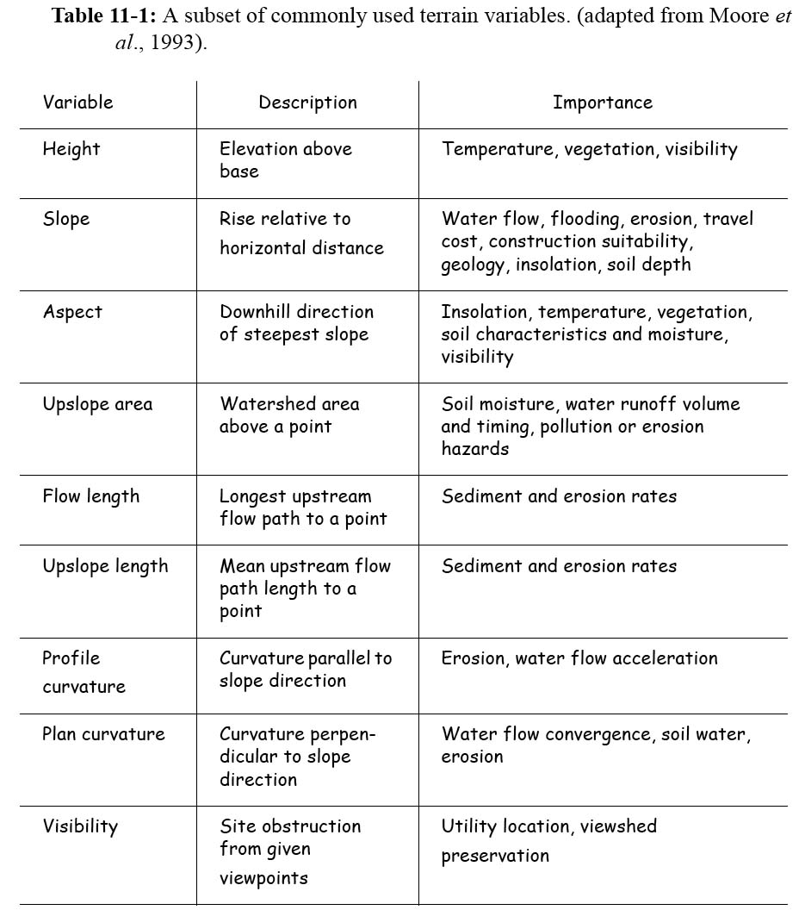
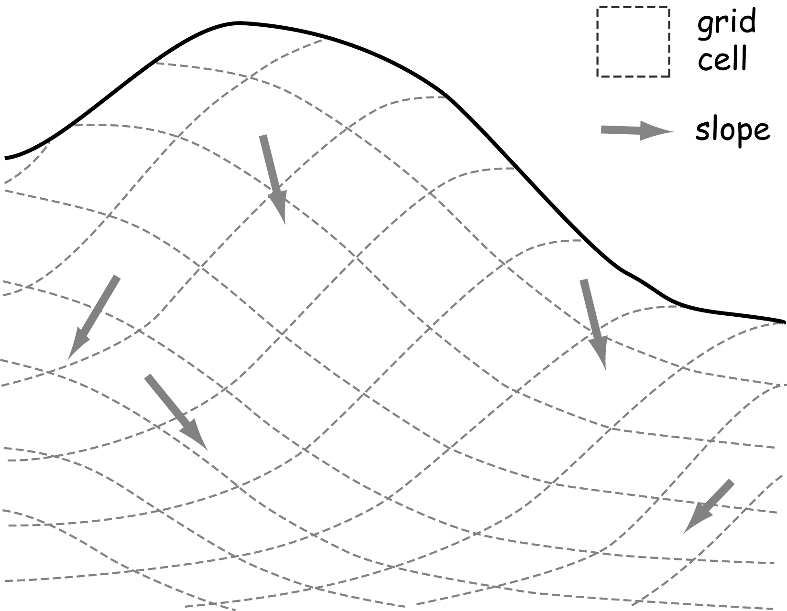
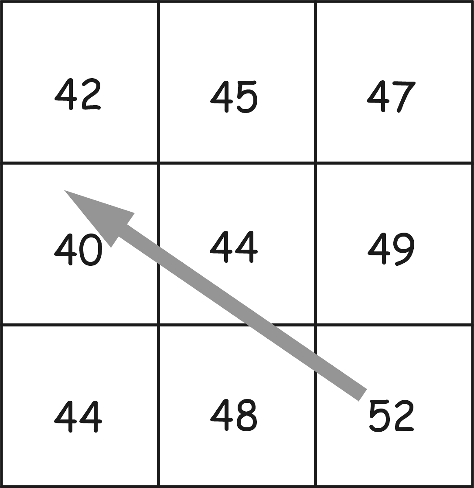
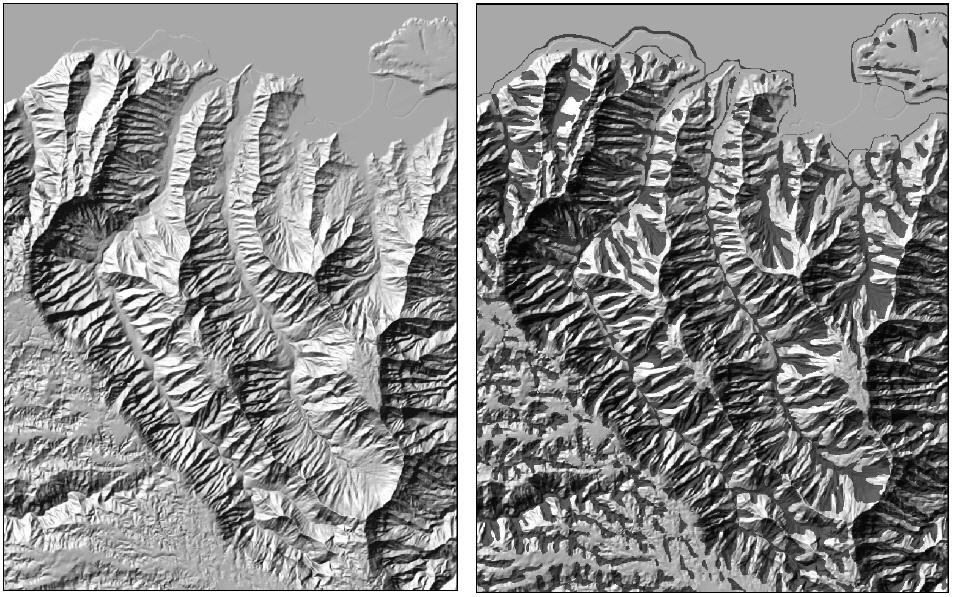
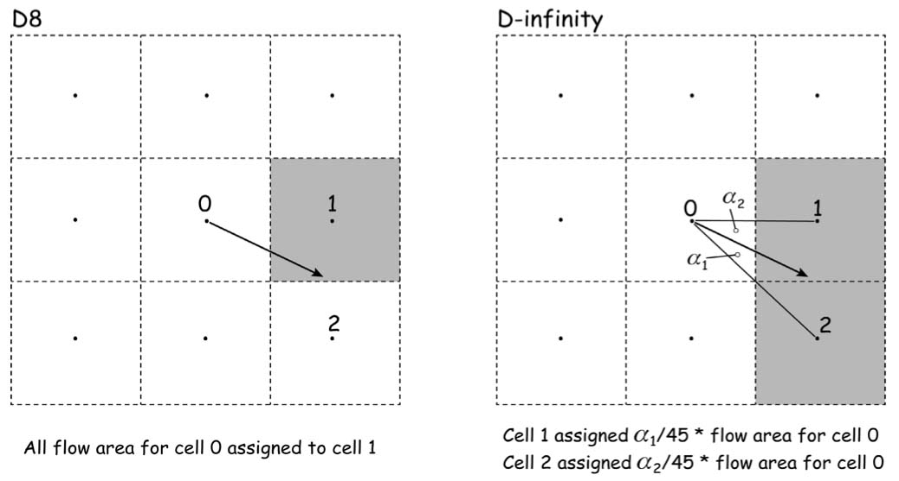
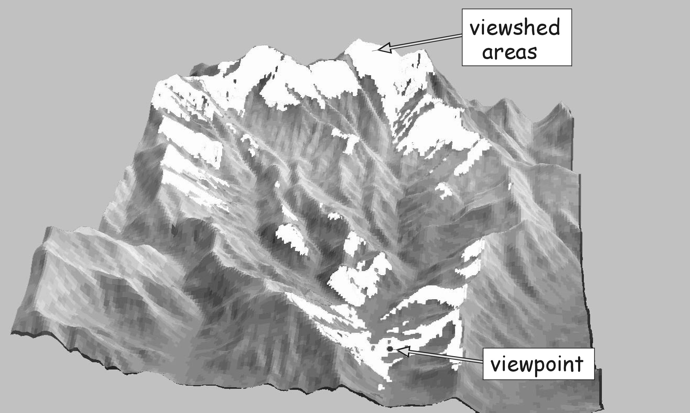
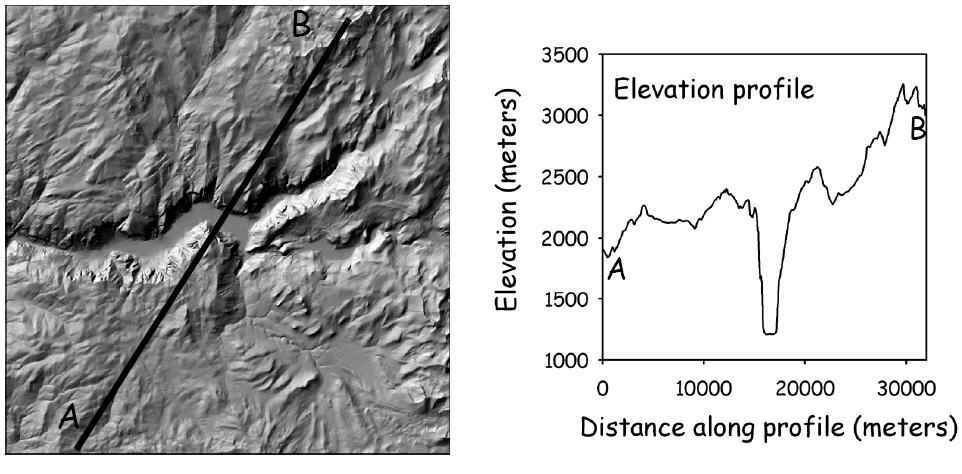
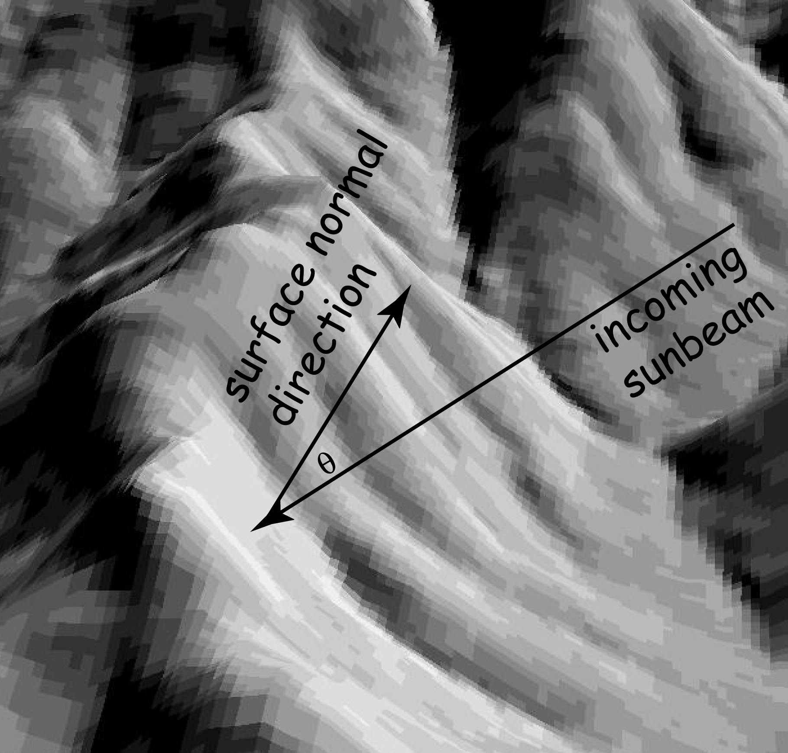

Week 11:
Terrain Analysis
Intro to GIS
Evan Lue, PhD
Terrain is Important
- Water supply
- Water quality
- Soil moisture
- Drainage
- Flood zones
- Land cover
- Land use
- Construction
- Transportation networks
- Utility networks
DEM or Hillshade?

Bolstad 2012, Fig 11.1
Terrain Variables
Bolstad 2012, Table 11.1
Slope and Aspect

Bolstad 2012, Fig 11.2
Slope
Simple trigonometry in 2 dimensions

Bolstad 2012, Fig 11.3
Slope in 3D
A hill can have different slopes in different directions
Bolstad 2012, Fig 11.4
Slope Ignores Cell Centers
Calculations factor in many surrounding cells
Bolstad 2012, Fig 11.5
Calculating Slope
4 neighbors are used for this calculation

Bolstad 2012, Fig 11.6
Slope Kernels
The 3rd-order finite difference method uses 8 neighbors

Bolstad 2012, Fig 11.7
Aspect
Bolstad 2012, Fig 11.8
- The direction that the slope faces, or its azimuth direction.
- Flat lands have no aspect.
Curvature
- Profile curvature - the curve in the direction of the slope.
- Plan curvature - the terrain's curvature perpendicular to the slope.

Bolstad 2012, Fig 11.9
Morphometric Features

Bolstad 2012, Fig 11.10
- Morphometry - the measurement of forms and shapes.
- These features make up the terrain and determine flows.
Hillshade on the Left...
On the right is...
Bolstad 2012, Fig 11.11
Hydrology Products
Watersheds
- Also known as basins and catchments.
- Delineates all areas which will flow/drain to the same point.
Bolstad 2012, Fig 11.12
Drainage Network
Calculated from flow direction.

Bolstad 2012, Fig 11.13
Divergent, Convergent, and Simple Flow

Bolstad 2012, Fig 11.14
Apportioning Flow
Multiple methods (like slope calculations)
Bolstad 2012, Fig 11.15
Spurious Pits
Also called sinks; artifacts of geoprocessing that can cause "pooled water"".

Bolstad 2012, Fig 11.16
Filled DEMs
Pits remain on the right. Pits removed on the right.

Bolstad 2012, Fig 11.17
Correct Watershed Creation
- Fill DEM
- Flow direction
- Flow accumulation
- Stream threshold
- Place outlets
- Watershed
Bolstad 2012, Fig 11.19
Other Terrain Analysis Products
Viewshed
The area which visible from a specific location based on terrain.

Bolstad 2012, Fig 11.20
Viewshed
White areas represent visible locations.
Bolstad 2012, Fig 11.21
Elevation Profiles
Useful for hiking, bicycling, or even scuba diving.
Bolstad 2012, Fig 11.22
Contour Lines
Lines of uniform elevation.

Bolstad 2012, Fig 11.23
Interpolating Contours
Based on known elevations at various points.

Bolstad 2012, Fig 11.24
Contours for Yosemite

Bolstad 2012, Fig 11.25
Two Terrain Products in This Picture
What are they?

Bolstad 2012, Fig 11.26
Shaded Reliefs
Commonly called hillshades. Creating shadows requires simulating sunlight.
Bolstad 2012, Fig 11.27
Hillshade Parameters
- Solar zenith - the angle created between an orthogonal axis at the surface and the sun's position.
- Solar azimuth - the compass direction of the sun in the sky.
Bolstad 2012, Fig 11.28